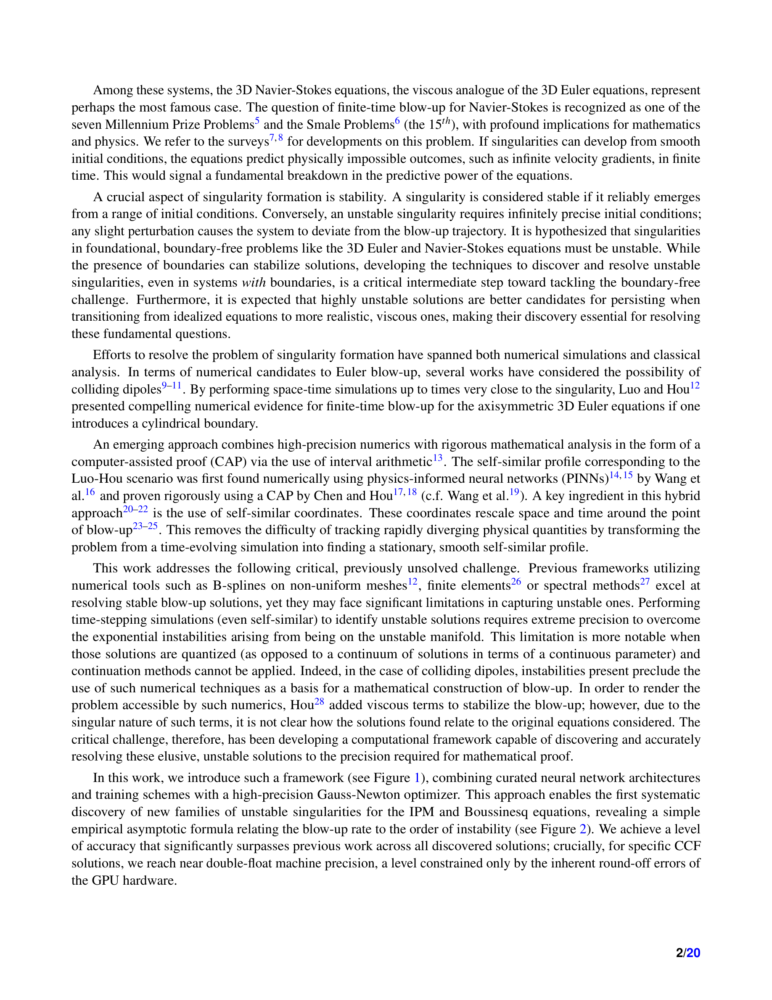
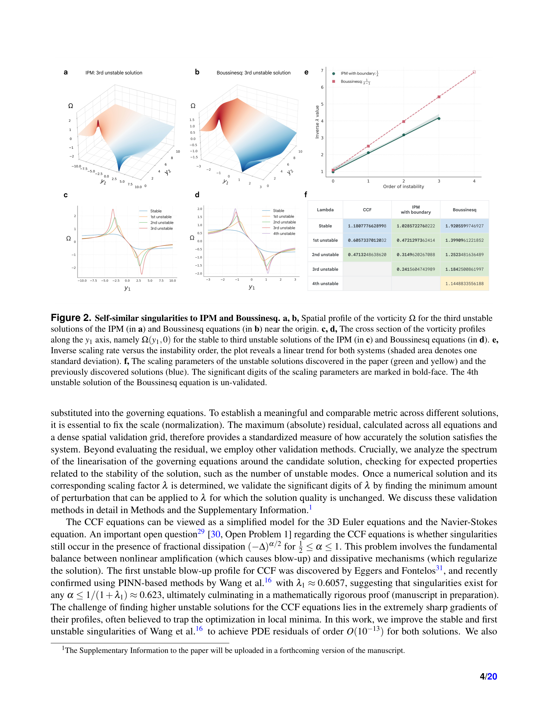
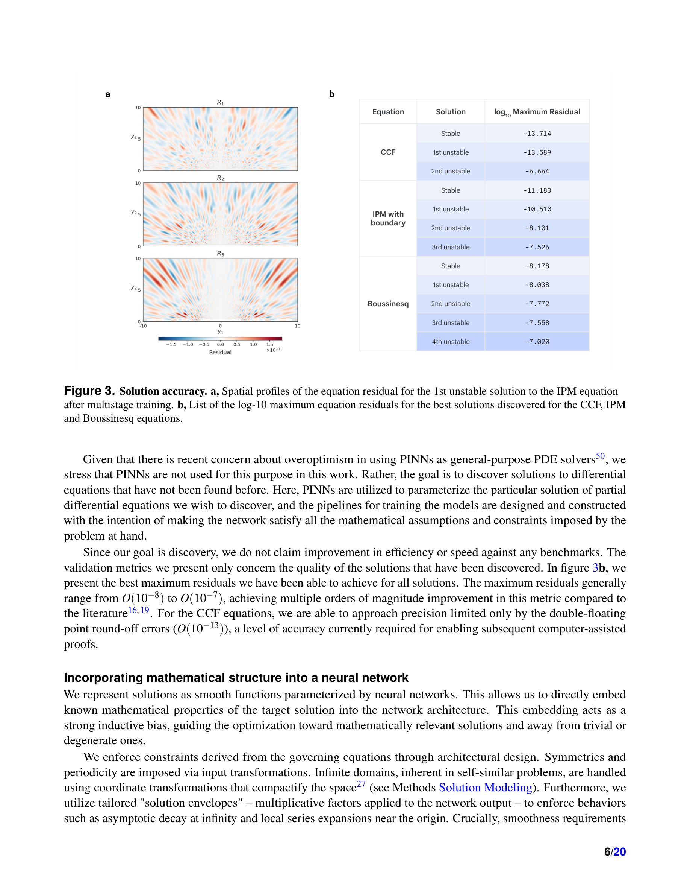
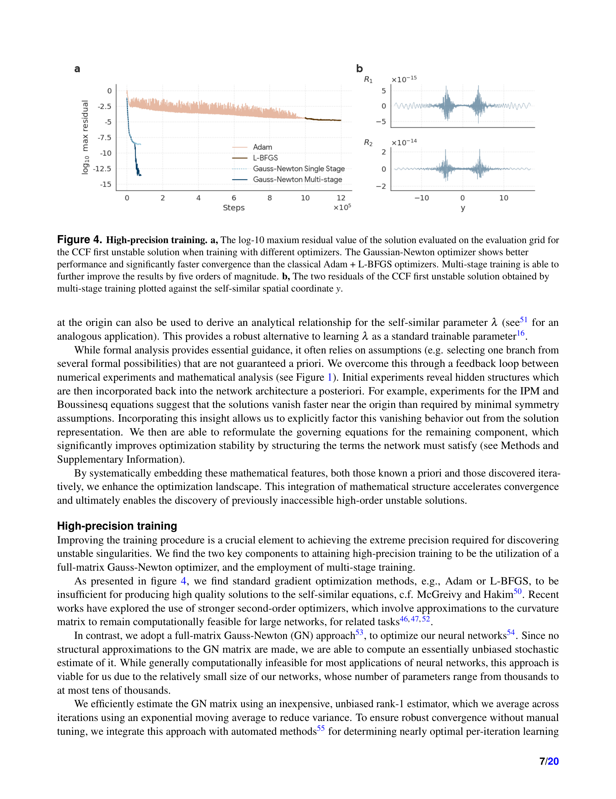

Figure 1

Figure 2
유체 역학의 지배 방정식(3D Euler, Navier-Stokes, IPM, Boussinesq)에서 불안정 특이점(unstable singularities)의 새로운 군(families)을 최초로 체계적으로 발견한 연구이다. 불안정 특이점은 무한한 정밀도로 조율된 초기 조건을 요구하여, 미세한 섭동으로도 blow-up 궤적에서 이탈하는 극도로 포착하기 어려운 해이다. 맞춤형 PINN(Physics-Informed Neural Network) 아키텍처와 full-matrix Gauss-Newton 최적화기, 다단계 학습을 결합하여, CCF 방정식에서는 GPU 하드웨어의 double-float 기계 정밀도(O(10^-13))에 근접하는 정확도를 달성했으며, 이는 컴퓨터 보조 증명(CAP)에 필요한 수준이다.

Figure 3
매끄러운 초기 조건으로부터 유체 방정식의 해가 유한 시간 내에 특이점을 형성할 수 있는지 여부는 수학의 근본적 미해결 문제이다. 3D Navier-Stokes 방정식의 경우 7대 밀레니엄 문제 중 하나(Clay Prize)이자 Smale 문제(15번)로 인정된다. 기존 수치적 접근은 주로 안정 특이점만 식별할 수 있었으나, 경계 없는 Euler/Navier-Stokes 문제에서는 불안정 특이점이 핵심 역할을 할 것으로 가설화되어 있다. 높은 차수의 불안정 해일수록 점성 효과를 섭동적 오차로 처리하기 용이하여, Euler에서 Navier-Stokes로의 전환에 중요하다.

Figure 4
총평: NYU, Stanford, Google DeepMind, Brown의 대규모 협업으로 이루어진 이 연구는 수학의 가장 근본적인 미해결 문제 중 하나인 유체 특이점 형성 문제에 대해 획기적인 진전을 달성했다. 불안정 특이점의 최초 체계적 발견, double-float 기계 정밀도의 달성, blow-up rate와 불안정 차수 간의 경험적 공식 발견은 모두 수학 및 수치 해석 분야에서 중대한 기여이다. 특히 PINN을 범용 PDE solver가 아닌 "수학적 발견 도구"로 재정립하면서, 수학적 통찰과 ML 기법 간의 반복적 피드백 루프를 구축한 방법론은 AI for Science의 모범 사례이다. 밀레니엄 문제(Navier-Stokes) 해결을 향한 결정적 중간 단계로서, 수학, 물리학, 컴퓨터 과학 모두에 지대한 영향을 미칠 것이다.